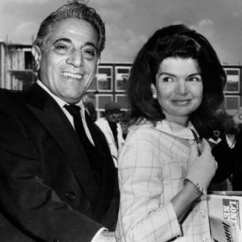
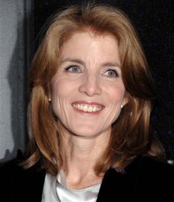

Chương 7

à thế giới đều biết những gì mà Jacqueline đã làm, đã cư xử trong những ngày tiếp theo sau cái chết của chồng và những cố gắng đè nén đau thương, đắm chìm triền miên trong hồi tưởng quang cảnh kinh hoàng của thảm kịch. Và mọi người cũng đều biết nàng đã mang các con đi bên cạnh nàng và tình thương mà nàng giành cho tuổi non dại của chúng như thế nào? Người ta có thể nhớ lại, một cách não lòng, cảnh người goá phụ trẻ với các con bên cạnh khi chiếc quan tài đi qua và, người ta cũng có thế nhớ lại, đứa trẻ lên ba đã giơ tay chào người cha lần cuối cùng ra sao. Ai, ngoài người mẹ, có thể dạy cho nó cừ chỉ cuối cùng của yêu thương và danh dự ấy?
Ở đây tôi không cần phải nhắc lại tỉ mỉ, vì có nhiều người đã làm. Tôi xin ghi lại những gì xảy ra sau này, một cách thích đáng, một việc mà không ai có thể giúp nàng làm. Tất cả những ngày kinh hoàng của cái chết và đám tang, nàng không nghĩ gì đến thân nàng, nàng chỉ nghĩ đến chồng. Chống đối các bạn hữu và cộng sự viên của Tổng thống, chống đối gia đình Kennedy, nàng cương quyết cho rằng một khi chồng nàng vĩ đại hơn các người bạn và gia đình lúc sinh thời, ông tiếp tục vĩ đại cả lúc đã nằm xuống. Ông phải được chôn trong Nghĩa địa Quốc gia, vì ông thuộc về dân chúng, chỗ nằm của ông phải trong thành phố đẹp đẽ, thành phố mà ông đã phục vụ một cách tận tâm này.

Sau đám tang, sau lễ mừng sinh nhật ba tuổi của John và những gì chứng tỏ sự can đảm để mang đến vui vẻ trong ngày sinh nhật của đứa con nhỏ, và sau khi nàng hội kiến riêng với De Gaulle, Eamon de Valera và Haile Selassie, chỉ có ba nhân vật được nàng chọn gặp riêng ; dù nàng không còn là một vị Đệ nhất phu nhân nữa. Nàng là một goá phụ, đúng ra nàng là bà cố John F. Kennedy.
Phải có được sự khuây khoả, một sự khuây khoả sâu xa, mới quên được vai trò đã từng thủ diễn. Thoạt đầu nàng cảm thấy cô độc, nỗi cô độc mà nàng đã từng biết qua, chỉ ở hiện tại nàng mới cảm thấy nỗi cô đơn, mà nàng không bao giờ biết đến trước đây. Nàng đã ý thức được những gì có thể gọi là tình yêu và ý hợp tâm đâu. Tình yêu gần gũi thân mật và tâm đầu của một người đàn ông đầy sinh lực, và nàng chỉ còn lại kỷ niệm những gì đã rời xa, một kỷ niệm quý báu; nhưng chỉ là kỷ niệm. Thể xác, tinh thần, tiếng nói, những gì đã trở thành quen thuộc đối với nàng đó, không ai có thể cung hiến được!
Làm sao có thể giải thích, với bao nhiêu những mến yêu, cảm thông của quần chúng, của bạn bè dành cho, đã không đủ xoa dịu nỗi cô đơn của người goá phụ?
Khi các lá thư chia buồn đã được phúc đáp, khi các điện tín và giây nói quan hoài của bạn hữu đã được nhận, ngày đã hết, đêm trải dài ra trước mắt và ngay cả khi các đứa trẻ phải vào giường ngủ, ánh đèn tắt và các cửa nẻo đóng kín, nàng đi vơ vẩn trong ngôi nhà đầy đủ tiện nghi ở Nữu Ước, cô đơn với nỗi kinh hoàng thức dậy.
Em chồng của nàng, Robert Kennedy. là người giúp đỡ nàng tận tâm mọi bề, và nhất là các đứa con của nàng. Nhưng ông còn có gia đình, một vợ và nhiều đứa con, nàng không thể nương tựa mãi.
Và quần chúng, mà niềm mến thương của họ như đã nhìn thấy, nhưng có thể hoặc đã kèm theo quá nhiều đòi hỏi. Họ chỉ muốn nàng có những gì mà họ muốn, người goá phụ lý tưởng của một vĩ nhân. Giống như họ đã từng đòi hỏi nàng phải là người vợ lý tưởng của một Tồng thống. Hình ảnh viết bằng chữ hoa phải được duy trì. Và có ngay cả ý tường kỳ dị, cho rằng trẻ và đẹp như vậy, một người đàn bà khó có thể hy vọng tái giá. Hầu hết mọi người đều không chấp nhận ý tưởng này - tại sao tôi nói hầu hết? Phải nói là không có một ai mới đúng.
Trong một hồi ký đăng trên tạp chí Look, người goá phụ đã viết:
Anh ấy đã ra đi gần một năm...
Vào những ngày - như ngày sinh nhật của anh ấy, một ngày kỷ niệm, ngắm nhìn các con của anh ấy chạy tung tăng trên bãi biển tôi đã nghĩ: Này này một năm rồi đây, lần cuối cùng anh ấy nhìn thấy cảnh tượng này. Yêu thương và vui sống trong khi anh ấy đã được tận dụng vào những ngày này. Khi bạn nghĩ rằng mỗi người có một ngày cuối cùng thì dường như bây giờ anh ấy đã có sự khác thường.
Chẳng bao lâu sự khác thường đó quay trở lại - nhưng mức độ tận dụng mà anh ấy đã có không bằng năm rồi. Vì thế đã kèm theo một chút ít hy vọng.
Ngày ấy bỗng nhiên chúng tôi cũng tìm thấy lẫn nhau có một số cách biệt hơn năm vừa qua. Sự khám phá ấy để ghi nhận những gì chưa hề được nghĩ đến, đã khiến anh ấy trở thành bất diệt trong trí nhớ của tôi Tôi không hề nghĩ đến bất kì sự an ủi nào. Những gì đã mất đó không thể thay thế được.
Một người từng yêu kính Tổng thống Kennedy, nhưng chưa từng gặp mặt bao giờ, đã viết cho tôi vào mùa đông này: "Người anh hùng đến, khi hắn được yêu cầu. Lúc niềm tin của chúng ta đã nhạt phai, là lúc người anh hùng đó ra đi - và đời sống mọi người đương thời chỉ còn sót lại một chút ít hào quang của hắn - và khởi đầu cho những câu chuyện dựng đứng, một cách khác thường".
"Lúc ấy tôi cũng đã nghĩ ra, với những gì bất thường của anh ấy, đã là sự báo hiệu. Tôi biết, nhưng tôi ước đoán ngày ấy không phải là ngày cuối cùng.
Tôi đã mộng mơ sống đời với anh ấy và cùng nhìn thấy các đứa con của chúng tôi lớn lên.
Bây giờ quanh anh ấy là một huyền thoại, trong khi anh ấy thích được là một người bình thường hơn.
Tôi phải tin rằng bây giờ anh ấy không hề chia sẻ nỗi thống khổ của chúng ta. Tôi nghĩ như vậy, bởi vì anh ấy không bao giờ nghĩ đến bất cứ cái gì là nỗi buồn đau, đang chờ đón phía trước. Trong đời, anh ấy chỉ biết chia sẻ những gì tạo thành hạnh phúc cho các bạn, trong trường hợp này, các bạn sẽ nhìn thấy anh ấy vui tươi. Nhưng bây giờ anh ấy không bao giờ biết hơn nữa - không biết đến thọ mệnh, phiền phức, tuyệt vọng, đang yếu, và cũng không biết đến sự mất mát của bất kỳ người thân yêu nào. Đêm mịt mù của anh ấy đã giữ lại tất cả vẻ tươi sáng của bình minh, không bao giờ biết đến sự mê hoặc của thiên nhiên, vì anh ấy đã chết.
" Anh ấy đã ra ra đi...
Cuộc phiêu lưu tiếp nối như bao giờ, trong rạng rỡ, của buổi bình minh, ở một nơi nào đó, như niềm mong ước".
Anh ấy đã tự do và chúng ta phải sống. Những ai yêu mến anh ấy phải biết rằng: "Cái chết mà các bạn đã nhìn thấy càng làm cho các bạn tin tưởng là nó sẽ đến quá dễ dàng với chúng ta".
Tôi không cố khoác cho tôi sự thống khổ, nàng đã nói câu đó, cho ta hiểu nàng vẫn mang nỗi xúc động rằng: John không phải là người biết hướng sự thù ghét đến các địch thủ của mình một cách hứng thú, rằng nàng không thể nào cho John thêm những đứa con... rằng thế giới, trong khi nhớ lại, đã nâng niu tin tưởng của anh ấy như là một cái gì khác thường. Người ấy một chính trị gia người Mỹ, có thế cho rằng tư tưởng của anh ấy không được quảng bác..., và nàng nói: "Tôi không bao giờ có hoặc không một đời sống của riêng tôi. Mọi thứ đều hướng về John. Tôi không tin rằng tôi sẽ không bao giờ gặp lại anh ấy nữa. Đôi khi sáng sớm thức dậy, tôi muốn nói với anh ấy một vấn đề gì đó, nhưng anh ấy không có mặt... Hầu như tôn giáo nào cũng đều cho là có một đời sống ở thế giới khác. Tôi đã bám lấy hy vọng đó, ba năm sống trong Bạch ốc là thời gian hạnh phúc nhất, gần gũi nhất đối với chúng tôi và bây giờ, tất cả đều ra đi. Bây giờ không còn gì, không còn gì hết".
Khi nàng bắt đầu bước ra khỏi nhà trở lại, chỉ thỉnh thoảng, nhưng đã có nhiều nghi vấn quanh những người thường tháp tùng với nàng. Adlai Stevenson, bạn của nàng và một vài người đàn ông khác lớn tuổi hơn.
Nhưng thật ra, không có ai trong số đó đã ngỏ ý với nàng. Họ đi với nàng chỉ hoàn toàn trên tình bạn.
Nàng trở về nhà sau một buổi chiều dạo quanh. Trở về với các căn phòng yên tĩnh, với các kẻ phục dịch lặng lẽ, với các đứa trẻ ngủ say, với giường ngủ của nàng, và cũng với nhan sắc, cũng với nỗi cô đơn ấy.
Dĩ nhiên, nàng phải bắt đầu tự vấn: như các người đàn bà khác đồng cảnh huống đã làm. Về những gì mà nàng đã mắc nợ quần chúng, những người đã đòi hỏi ở nàng quá nhiều nhưng cho nàng thì quá ít. Qua những tâng bốc của quần chúng, sự gìn giữ tiết hạnh được họ áp đặt lên nàng và luôn luôn được họ lưu tâm theo dõi, đã khiến nàng không tìm được một kẻ động tâm nào. Tiết hạnh là một cái gì làm cho con người bất động, không hề quyến rũ được sự cảm thông từ kẻ khác. Tiết hạnh trở thành uể oải, suy nhược. Quần chúng không biết đến; không làm gì đối với những đêm đầy kinh hoàng, những khuya cô đơn trùm lấp của nàng. Không có gì hết.
Và ai có thể quy lỗi cho nàng nếu trong cơn tuyệt vọng nàng phải tìm một vòm trời tạm bợ khác để ẩn náu? Quần chúng không hài lòng, nhưng nếu gạt quần chúng sang một bên, nàng đã nhìn thấy rõ những kẻ gọi là hiểu biết nàng cũng không hơn gì quần chúng.
Ngay cả khi nàng tìm được những kẻ đồng tâm, nàng cũng sẽ không thể thoát khỏi hình ảnh của ngày người đàn ông mà nàng yêu thương nằm xuống.
Nhưng bất thình lình xảy ra một cái chết khác, một thảm kịch khác. Chỉ một người có thể giúp đỡ nàng, người em chồng của nàng: Robert Kennedy; nhưng ông đã mang chung số phận với người anh. Chỉ một đôi năm hồi sinh của hy vọng. Nàng biết rằng: qua tất cả những người trên thế gian này, người mà chồng nàng sẽ chọn để nối tiếp ông bước vào Bạch ốc là Robert Kennedy, người đầu tiên. Khi Robert Kennedy tuyên bố tranh cử Tống thống, ngày 16 tháng 3 năm 1968, gia đình Kennedy nhập cuộc, trong đó có Jacqueline, bằng tất cả hăng say của nàng. Bấy giờ các tư tưởng của John Fitzgerald Kennedy sẽ được tiếp nối, tất cả dở dang của John sẽ được hoàn thành. Có ai ngờ cùng một thảm kịch lại đến vào ngày 5 tháng 6? Nếu Ethel Kennedy là người bị tước đoạt nhiều nhất, Jacqueline là người thứ hai đứng kề cận bên nàng. Rose Kennedy lúc bấy giờ từng trải với số tuổi đã chịu đựng được bởi niềm tin tôn giáo, nhưng hai người đàn bà kia còn trẻ, và đời sống của họ còn dở dang. Jacqueline, sau khi nhìn lại đời sống của nàng, vẫn đều đều một mực, ban ngày bao quanh nàng vẫn là công chúng, ban đêm vây bủa nàng vẫn là cô đơn, cuối cùng đã đưa đến quyết định: nàng phải bước thêm bước nữa. Có hai lý do:
Thứ nhất, nàng phải bào đảm đời sống của nàng và sau đó là các con. Trên phương diện này cần đòi hỏi một người đàn ông lớn tuổi, đã tạo được căn bản vững chắc trong đời sống và người đàn ông ấy phải tôn trọng kỷ niệm và quá khứ của nàng. Và trên hết, người đàn ông ấy phải là chỗ nương tựa hoàn toàn tin cậy của nàng. Tất cả đòi hỏi này cho thấy hình ảnh người cha vẫn còn được duy trì trong trí tưởng tượng của nàng. Người cha mà nàng cảm phục, yêu mến ấy, chính bản thân ông không bao giờ có sự bảo đảm đầy đủ để ông chia sớt cho nàng. Và người cha kế, đáng tin cẩn, đáng để nàng nương tựa, nhưng ông ta thiếu vắng những cảm xúc mà nghệ sĩ tính trong nàng đòi hỏi.
Thứ nhì, người đàn ông nàng tái giá với phải yêu trẻ con, phải yêu các đứa con của nàng. Nàng bao giờ cũng là một hiền mẫu. Người ta có thể thấy qua sự bám víu mà các con nàng đã dành cho nàng, chúng ngoan ngoãn bên nàng, chia sả đồ chơi của chúng cho nàng, ảnh hưởng của nàng đối với cô bé Caroline rõ rệt nhất cho sự nhận xét. Cô gái nhỏ này đã sùng bái người mẹ đến nỗi nó bắt chước từ cử chỉ cho đến hành động của mẹ: luôn luôn ngắm nghía sắc đẹp của mẹ bằng đôi mắt say mê.
Các đòi hỏi của Jacqueline Kennedy không phải dễ dàng cho một người đàn ông. Và cũng không phải dễ dàng cho sự tìm thấy của chính nàng. Không những trong bất kỳ người Mỹ nào, mà cả đến người Anh đứng tuổi nữa. Nàng thích người Pháp, nhưng hay thay đổi là bản tính của họ, và người Ý, thì đối với họ, nàng là mẫu người quá lạnh lùng.
Hy Lạp là xứ thích thú và dễ mến đối với Jacqueline hơn hết, nàng đã từng sang đó một lần, khi con trai nàng, Patrick Bouvier, chết vào năm 1963.
Nàng đến Aegean với người bạn của Lee, Aristote Onassis. Và nhờ chuyến đi này nàng đã quên đi nỗi buồn mất con. Aristote Onassis cũng là người đầu tiên đã đến chia sẻ buồn đau với nàng ngay khi John chết. Từ đó, Onassis, mặc dù không ngỏ ý gì khác lạ, vẫn được xem là người thường đi bên cạnh nàng hơn hết. Hơn nữa, ông ta là người sinh trưởng ở bên cạnh bờ biển Địa Trung Hải, như tổ tiên của Jacqueline, khiến giữa hai người có sự gần gũi và hiểu biết.

Cả hai có nhiều điểm giống nhau. Onassis yêu cái đẹp, yêu nghệ thuật, và quan trọng nhất, tiền bạc mà ông ta hiện có trong tay đúng với sở nguyện của Jacqueline. Onassis là một trong những người giầu nhất lên thế giới. Với ông ta, những ngày còn lại của nàng không phải nghĩ đến tiền bạc hoặc bất kỳ ham muốn nào khác. Đó cũng là sự bảo đảm mà nàng đòi hỏi. Và Onassis Onassis yêu trẻ con, ông có một khả năng thiên phú đến trẻ con ưa thích, gần gũi. Và tình yêu của Onassis giành cho nàng ở giai đoạn chín mùi và từng trải của ông. Onassis từng nói với Jacqueline: Nàng giống như một con chim, nàng muốn được sự che chở của tấm lưới, đồng thời, nàng muốn được tự do bay nhảy. Cả hai điều này, tôi có thể hiến dâng cho nàng. Ông ta ông là một người đàn ông khôn ngoan và hiểu biết.
Khi Onassis ngỏ lời cầu hôn lần đầu tiên, Jacqueline lưỡng lự. Chi khi Robert Kennedy bị giết nàng mới dứt khoát nhận lời Onassis. Nàng không thể sống đơn độc lâu hơn nữa và bấy giờ nàng đơn độc thật sự vì không có một ai trong gia đình Kennedy có thể thay thế hai người đàn ông đã chết. Một khung cảnh thay đổi hoàn toàn, một đời sống mới, đó là sự giải đáp và một đời sống mới ấy là trên hòn đảo xinh đẹp ở Hy Lạp. Nàng chọn, và chọn một cách thận trọng, nàng đã mặc cho công luận muốn nghĩ gì thì nghĩ. Nàng không cần phải lưu tâm nữa.
Khi được hỏi về cuộc hôn nhân, Rose Kennedy nói: Tôi nghĩ là Jacqueline sẽ hạnh phúc... Cuộc hôn nhân đó còn khá hơn đời sống quạnh hiu.
Mới đây, tôi ngồi trong phòng khách của một ngôi nhà cổ thanh nhã ở Georgetown. Chủ nhà là một trong những người bạn thân của gia đình Kennedy, và đương nhiên chúng tôi đã bàn chuyện về người đàn bà nguyên là Đệ nhất phu nhân đó trong tình thân mật. Tôi nêu vấn đề cho ông bạn của tôi khi ông rót một tách cà phê và đưa cho tôi: ông bạn nghĩ xem Jacqueline Onassis có hạnh phúc không?
Chủ nhà trả lời một cách quả quyết: Rất hạnh phúc. Tôi đã từng gặp họ đi với nhau và tôi cũng từng gặp họ tại nhà riêng. Rõ ràng là họ đang cần có nhau.
Nàng vẫn là một người đàn bà thông minh, bén nhạy và trẻ đẹp. Còn ông ta, là một người nhiều tuổi, dĩ nhiên ông ta rất thông minh và lọc lõi. Sự lọc lõi của ông ta đã gây say mê cho nàng.
Nàng chưa từng được hưởng nhiều như vậy. Đời sống gần như ẩn dật và xa hẳn thế giới bên ngoài ở hiện tại còn khiến nàng trẻ trung hơn. Nàng không thật sự quảng bác, nhưng nàng là một người đàn bà say mê nghệ thuật, nàng biết cái đẹp và cái xấu, chắc chắn sự hiểu biết đó khá sâu xa. Nàng là một loại người biết khám phá người khác. Bởi vậy tôi nghĩ nàng có thể là một nhà văn lớn. Nàng thường ghi nhận xét các buổi nhàn đàm lên giấy. Tôi đã từng được nàng gửi một đoạn văn, trong ấy là cảm nghĩ của nàng về tôi sau một buổi chiều đàm đạo. Nàng quả thật là một loại người khám phá người khác. Nàng suy tư và Onassis cũng say mê sự suy tư. Onassis nhận lấy trách nhiệm đối với Caroline và John một cách nghiêm cẩn, như mẹ chúng. Ông ta yêu mến hai đứa bé này, giúp đỡ chúng mọi việc, cả đến bài làm ở nhà. Nàng thức dậy và dùng điểm tâm lúc bảy giờ rưỡi mỗi sáng với các con. Dĩ nhiên nàng có thể tiếp tục ngủ, nhưng nàng không làm như vậy. nàng muốn có mặt với các con lúc chúng ăn.
Và dĩ nhiên, đời sống hiện tại khác biệt nhiều đối với nàng, nhưng nàng thoả nguyện. Nàng đang gầy dựng những kỷ niệm mới. Nàng cũng có những tiện nghi mới, xa hoa hơn và lộng lẫy hơn bao giờ hết trong đời nàng, ngay cả khi nàng ở trong Bạch ốc. Hồi ở Bạch ốc, những tiện nghi riêng của nàng không có gì gọi là quá mức. Phần của Bạch ốc dành riêng cho gia đình nàng không lấy gì làm rộng rãi, ít ra là đối với thói quen của những người giàu sang tột bực.
Một hành lang sâu thẳm, có nơi đượm vẻ u tối chia đôi tầng lầu thứ hai. Các phòng ngủ của họ nằm một phía. Một căn phòng bầu dục, tất cả quét vôi màu vàng nhạt, giống như một loại phòng khách, nơi gia đình gặp nhau trước bữa ăn chiều. Một căn phòng khác ở cuối dãy, đối diện với căn phòng bầu dục, là phòng riêng của Jacqueline.
Tầng lầu hai này dường như không bao giờ tụ họp đông người, chỉ đôi khi Tổng thống mời một số thực khách của ông lên đây. Thông thường các bữa ăn đều được thu hẹp, chỉ khoảng từ sáu hoặc tám người. Như đã biết, nàng và Tổng Thống ưa thích lối tiếp đãi như vậy, nghĩa là trong phòng ăn của gia đình và chỉ được dành cho các bạn thân. Nhưng sự biệt đãi này không những khiến cho mọi một Tổng Thống hoặc phu nhân của ông khó tạo thêm thân hữu, mà cũng khó biết ai là thân hữu thật sự.
John F. Kennedy từng nói: Vị Tổng Thống không có một nơi nào thích hợp hơn để tạo thêm thân hữu.
Và Jacqine đã nhiều lần tỏ ra chán nản khi thấy những người mà nàng tưởng là bạn, bỗng nhiên trở thành kẻ thù, hoặc trở thành kẻ nịnh hót. Và vì vậy các bữa ăn gọi là thân mật càng ngày càng vơi đi và thực khách thường trực chỉ còn lại một vài bạn cũ có đời sống đủ bảo đảm để không cần xin xỏ các ân huệ mà thôi.
Trong khi tôi suy ngẫm, ông bạn tiếp tục câu chuyện. Hai đứa trẻ Caroline và John lạc lõng trong Bạch ốc. Tôi nhớ, một hôm khi gặp cả hai trên lối đi, tôi hỏi Caroline là có ai làm bạn không. Cô bé đáp, thật nghiêm trang: "Anh này không phải là bạn của cháu đâu. Anh này là anh ruột của cháu."
Chúng tôi cười, và tôi hỏi hai đứa trẻ có còn giữ sự gần gũi trong ngôi nhà mới hay không. Người bạn trả lời là vẫn như trước, có phần gần gũi hơn. Điều đó dễ hiểu, bởi vì chúng đã ý thức được chúng là người mang họ Kennedy: cho dù cả hai được người cha kế thương yêu đúng mực.
Ông ta tiếp: Sự thật, tôi cảm thấy một sự gần gũi ấm cúng hơn trong ngôi nhà mới. Không nhiều lời âu yếm giữa đôi vợ chồng, nhưng họ tỏ ra thoải thái cởi mở khi kề cận. Chỉ cần nhìn đôi mắt của họ, ý tứ của họ, sự vui vẻ hoà đồng của họ trong một trò chơi hoặc trong một sở thích nào đó là giết ngay.
Những tiết lộ cửa người bạn đã khiến tôi hơi lạ lùng về sự hồi sinh đó. Dĩ nhiên người vợ cần một người chồng đủ lớn tuổi để bao bọc nàng, để hiểu biết nàng, để chiều chuộng nàng, để muốn được những gì nàng muốn. Những người chồng trẻ chỉ nghĩ đến họ đầu tiên, và các bà vợ đối với họ chỉ là những kẻ giúp đỡ, phụ thuộc, như cái bóng của họ, người vợ cần phải nghĩ đến chồng đầu tiên. Nhưng đối với một người chồng lớn tuổi hơn người vợ nhiều, người vợ sẽ là niềm vui thích, thân yêu của ông ta. Người đàn bà vừa là người vợ, người chủ gia đình mà vừa mang hình ảnh của một người con nữa.
Mong ước của người chồng lớn tuổi là được thấy người vợ hạnh phúc và hài lòng, và điều đó chứng tỏ người vợ đã vừa ý người chồng. Vâng, Jacqueline đã chọn rất đúng. Nàng được bảo đảm, và sự bảo đảm trong thời đại này, trong thế giới này như vậy là đủ - hoặc có thể nói là quá đủ, phải không? Ít nhất là, sự bảo đảm này rất hiếm có.
Vừa mới đây, trên một nhật báo ít độc giả, phát hành ở thành phố nhỏ bé Vermont của tôi, xuất hiện một mẫu tin nhỏ nhưng có thể làm cho người ta nuốt phăng đi, bản tin nói về ảnh hưởng của Jacqueline đối với chồng của nàng: Aristote Onassis. Theo tin của tờ báo, nàng đã thay đổi người đàn ông này từ một tay tỉ phú khôn ngoan lọc lõi trở thành một tay nhân đạo, biết thương người. Từ trước đến nay, Onassis không bao giờ tin ở lòng nhân đạo. Ông ta khăng khăng cho rằng con người phải tự lo liệu lấy thân. Bây giờ, dưới ảnh hưởng mạnh mẽ này, người vợ đẹp của ông, ông đã thay đổi thái độ. Nhiều số tiền to được ông trích ra để giúp đỡ những người thiếu may mắn, đặc biệt là trẻ em. Một học viện được yểm trợ tài chánh ở Hy Lạp mang tên Onassis. Hơn nữa, Onassis cũng chiều theo ước muốn của Jacqueline là hai con của nàng phải được gây dựng ở chính xứ sở của chúng, ông đã dời tất cả gia đình sang Nữu Ước, và chỉ thỉnh thoảng đi về thăm viếng hòn đảo riêng của ông ở Hy Lạp. Ông cũng bán luôn toà dinh thự lộng lẫy ở Ba-lê.
Jacqueline cũng thường dẫn dắt người chồng lớn tuổi vào hào quang đầy huyền thoại của gia đình Kennedy, một huyền thoại không phải chính nàng gây dựng, nhưng nàng bắt buộc phải nghĩ đến, qua hình ảnh người chồng quá cố của nàng. Huyền thoại đó đã trở thành một phần đời của nàng ở hiện tại. Chính nàng không được phép thay đổi, nàng phải duy trì, và nàng đã kéo ảnh hưởng của nó sang một trong những người giàu nhất thế giới. Từ khi kết hôn với Onassis, nàng được xem như không còn dính dáng gì đến gia đình Kennedy. Mọi người đã nói thẳng sự thất vọng của họ ra. Họ cảm thấy nàng đã chà đạp lên huyền thoại Kennedy, đúng ra nàng phản bội nó. Nhưng hiện tại sự phô bầy có tính cách bảo vệ quyết liệt, nhằm chứng tỏ sự trung thành của riêng nàng cho huyền thoại Kennedy, vị thế tiêu tán đã lập tức được phục hồi.
° ° °
Trong số những người đàn bà Kennedy, Caroline Kennedy cũng cần phải được đề cập. Dĩ nhiên, Caroline còn quá nhỏ, để chúng ta phán xét đời sống của cô bé này đã bị ảnh hưởng như thế nào đối với các biến cố bất hạnh và bất thường của giòng họ. Những ghi nhớ sớm nhất trong đời Caroline có lẽ là những gì thuộc về toà Bạch ốc, và đời sống của cô bé này cũng đã có ngay các ân sủng sớm nhất và trên một vài phương diện, ân sủng này dĩ nhiên không phải luôn luôn tốt đẹp. Rồi thì Caroline trở thành một cô gái nhỏ hồn nhiên, dễ mến. Nhưng với cái chết của người cha đã khiến cho cô ta làm quen sớm với thảm kịch, mà hình như mãi mãi đeo đuổi theo dòng họ cô ta.

Caroline Kennedy
Bây giờ Caroline đã là một thiếu nữ có nhan sắc và thông minh. Cô gái là âm bản người mẹ, từ cách đi đứng, cử chỉ, lời nói cho đến lối giao tiếp với người lạ, có thể cố ý hoặc vô tình, đều rập khuôn, đều bắt chước người mẹ mà cô ta kính phục.
Hiện tại, với người cha kế giàu có, đời sống của Caroline dĩ nhiên được bao bọc trong nhung lụa, và giúp rất nhiều vào việc tạo dựng tương lai của cô. Nhưng, có một điều ở Caroline, mà tiền bạc không thể nào tìm được: Đó là tuổi thơ thảm khốc của cô, được xây dựng trên thảm kịch và sự mất mát không thể thay thế. Caroline đã học hỏi được rằng đời sống không thừa nhận sự thiện mỹ và ân sủng.
Không thể nhìn vào những vui buồn ở hiện tại mà xét đoán được tương lai nào sẽ dành cho Caroline. Định mệnh sẽ mang cô ta lên cao mà cũng có thế dìm sâu cô ta xuống thấp. Bản tính đa cảm giúp cho Caroline sự vui vẻ hồn nhiên, đồng thời cũng tạo ra sức chịu đựng của cô ta chỉ đến một giới hạn nào đó.
Nhưng Carolille không phải là một đứa trẻ thông thường. Caroline là một người mang họ Kennedy, và dĩ nhiên cũng thừa hưởng được đức tính can đảm, phấn đấu của giòng họ này.